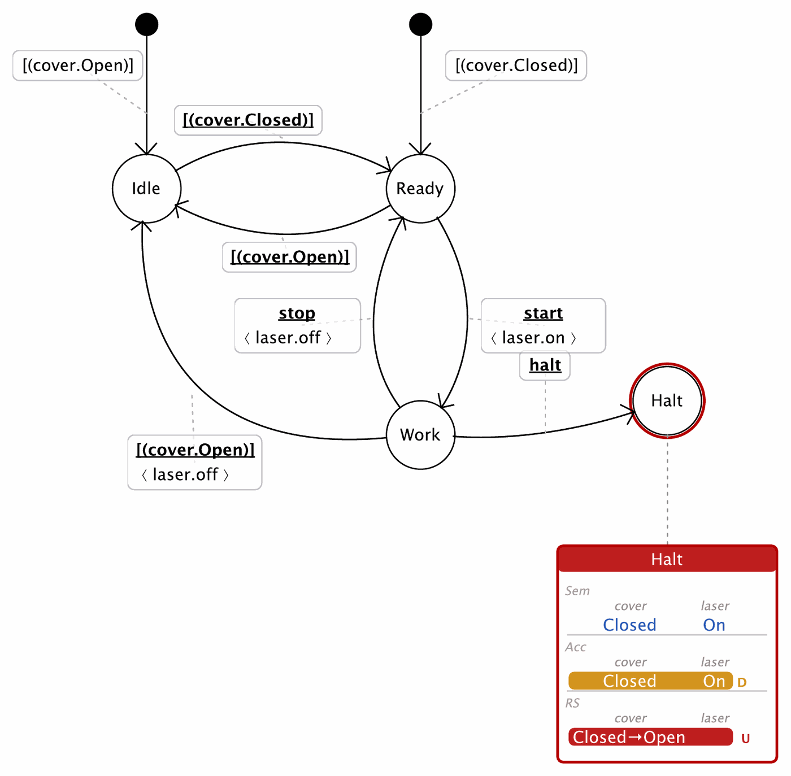
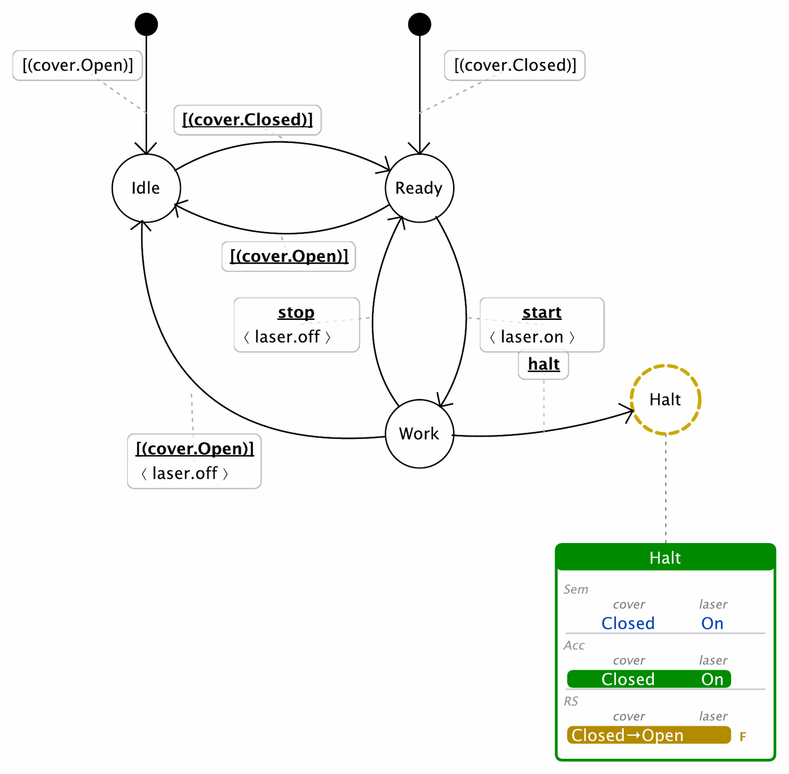

The last companion note treats liveness—the property that the controller keeps moving. It is the most global of the three, because it depends on both directions studied so far: a state must actually be reached (which depends on the incoming transitions of File 1) and every configuration must be able to progress (which depends on the outgoing transitions of File 2). Two rules close the loop: R7, which forbids unreachable states and deadlocked configurations, and R8, the deliberate exception that lets a fail-safe sink opt out of the reactive obligations. Where Files 1 and 2 were about a single state or a single boundary, this note is about paths through the controller.
The rules of the first two notes are local in the strongest sense: R1 judges a single configuration against a single state's constraints, R2 judges a single exit zone. Liveness is different. It asks whether the controller, taken as a graph of states and transitions, lets the system keep going—and that question cannot be answered by looking at one state in isolation.
It has two faces, and each inherits from one of the previous notes. Reachability asks whether a state is ever entered at all: a state has a semantics only if some incoming transition delivers a configuration to it, so an unreachable state is a downstream symptom of the guards and actions of File 1. Deadlock-freedom asks whether, once in a configuration, the system can get out: a configuration must reach an enabled outgoing transition, directly or after an internal component step, and that in turn depends on the driving and reactive transitions of File 2. Liveness is thus where the two directions meet (Figure 1).
c₂′, which can—both are live. c₃ has neither a direct escape nor any internal move: a secondary deadlock. A primary deadlock is the weaker failure—no escape path exists—while a secondary deadlock is a primary one that additionally cannot evolve internally at all.R7 — Reachability and deadlock-freedom (liveness). No state has empty Conf(s) (no unreachable state); every configuration retains an escape path to some enabled outgoing transition, directly or after internal evolution (no primary deadlock); and it is not additionally stuck internally (no secondary deadlock).
A controller state is reachable exactly when its computed semantics is non-empty—when some incoming transition actually delivers a configuration to it. An unreachable state is dead structure: it may be drawn, named, and annotated, but the system never enters it, so its constraints and reactions are never exercised. Because Conf(s) is assembled from incoming guards and actions (File 1), an unreachable state is usually the downstream sign of a guard that selects nothing, an action that produces nothing, or simply a state no transition points to.
Failure mode. Unreachable state — Conf(s) is empty. Reported under Unreachable States; the dashboard shows a gold/yellow status rather than red, marking it as a structural rather than a safety problem.
A configuration is primary deadlocked when it has no escape path to any enabled outgoing controller transition—neither directly, nor after an internal component evolution to some other configuration that is directly covered. It is a point from which the controller, as wired, can never move on. Whether an escape exists depends on the driving and reactive transitions leaving the state (File 2): a missing reaction or a missing driving transition is what strands the configuration.
Failure mode. Primary deadlock — a configuration with no escape path. Reported under Primary Deadlock Configurations; masked on fail states (R8).
A secondary deadlock is stricter: a configuration that is primary deadlocked and also cannot evolve internally at all. A primary deadlock might still see the components shuffle among themselves without ever reaching an exit; a secondary deadlock is completely frozen—the configuration c₃ of Figure 1. The distinction matters for diagnosis: a secondary deadlock is an unconditional dead end, whereas a primary one may hide live internal motion that simply never reaches a controller transition.
Failure mode. Secondary deadlock — primary deadlocked and internally stuck. Shown with a red underline on the configuration row and reported under Secondary (Internal) Deadlock Configurations; masked on fail states (R8).
In PWSEditor. After each recomputation the editor checks, for every configuration, whether an escape path to some enabled outgoing non-self transition still exists—directly or after internal evolution. Configurations that lose every escape violate the primary-deadlock obligation; those that also cannot move internally violate the secondary one. Unreachable states surface in gold; deadlocks in the dashboard status and the Extended Dashboard, with dedicated Controller-Report sections. The enforcement is incremental: the alarms appear the moment an edit strands a configuration, not at the end.
Micro-example. Give the Cover–Laser controller a state Halt with no outgoing transitions, entered as an emergency stop. Every configuration of Halt then has no escape path—each is a primary (and, if the components cannot move either, secondary) deadlock—and any exit zone of Halt is uncovered. Under R2 and R7 the tool reports all of this. But that behaviour is exactly what an emergency stop is supposed to have; the alarms are false positives. This is the situation R8 exists for.

Halt is entered from Work on the halt event and has no outgoing transitions. Its only configuration (Closed, On) has no escape path—PWSEditor tags it D (deadlock)—and, since the cover can still open, its exit zone Closed → Open is red and tagged U (uncovered). Under R7 and R2 the tool reports both. Yet this is exactly what an emergency stop is meant to be: the alarms are false positives—the situation R8 exists for.R8 — Fail-state masking (exception). A state explicitly marked fail—a deliberate fail-safe sink—is exempted from the reactive obligations: R2 (uncovered exit zone) and the deadlock clauses of R7 are masked. Consistency (R1), orphan exit zones (R4), guard and action well-formedness (R5, R6) and reachability (R7, unreachable) remain in force.
Not every dead end is a defect. A fail-safe sink—an emergency stop, a safe park, a halt-and-latch—is a state the controller is meant to enter and stay in. Requiring it to react onward (R2) or to keep an escape path (R7) would contradict its very purpose, and would flood the report with alarms that describe intended behaviour. R8 is the disciplined way to say "this dead end is on purpose": marking a state fail masks exactly the obligations that a terminal refuge should be allowed to break.
What R8 does not relax is as important as what it does. A fail-safe state must still be internally consistent—its computed configurations must satisfy its constraints (R1)—must not carry orphan exit zones (R4) or malformed guards and actions (R5, R6), and must still be reachable: a fail-safe state you can never enter is dead structure, not a refuge, and remains flagged. In other words, R8 relaxes the obligations about leaving the state, never those about being a coherent, reachable state.
Caveat. Fail-state marking is a modelling assertion, not a fix. Masking the deadlock and coverage checks on a state that was not meant to be terminal simply hides real problems. The marking should record a genuine design decision that the state is a fail-safe sink.
In PWSEditor. A state is marked through its context menu (Fail state). Marking it masks the uncovered-exit-zone check and the primary and secondary deadlock checks for that state, while orphan guards, orphan actions, constraint violations, orphan exit zones and unreachable-state detection stay active. Exit-zone computation itself is not switched off—only how the selected diagnostics are interpreted and reported changes.
Micro-example. Mark the Halt state of the previous example as fail. The uncovered-exit-zone and deadlock alarms disappear, because a halt is allowed to be terminal; but if Halt admitted a configuration outside its constraints (R1), or no transition ever reached it (unreachable), those would still be reported. The refuge is exempt from moving on, not from being well-defined.

Halt, now a declared fail state. Marking Halt as fail tells PWSEditor it is a deliberate terminal refuge: it is drawn with a dashed gold ring, its dashboard header returns to green, and the exit zone is tagged F (fail-masked) rather than red U. The uncovered-exit-zone (R2) and deadlock (R7) alarms disappear—but R1 (consistency) and reachability still apply: a fail state is exempt from moving on, not from being well-defined and reachable.Liveness is read, not wired: there is no "liveness annotation" to edit, only the consequences of the transitions built in Files 1 and 2, surfaced on the state dashboards.
Conf). Trace each back to an incoming guard or action that selects or produces nothing (File 1), or to a state no transition points to.This is the sense in which liveness closes the trilogy. It has no machinery of its own: it is the global read-out of the local decisions made in the first two notes. A controller in which every state satisfies R1–R7—with R8 marking the intended exceptions—is well-formed, and only then does the semantic analysis of Part IV become trustworthy. Part VI shows the whole cycle end to end on the Cover–Laser controller, where the dashboards move to green as reachability and escape paths are secured.
← Return to Part IV · File 1 — Injecting Semantics · File 2 — The Reactive Space